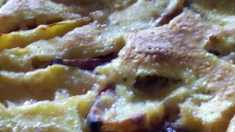

This is the once and future home of the world's best recipes
The Peach Thing

The Peach Thing (Peach Custard-Cobbler)
Description
This eggy, custardy cobbler is delightful and nourishing. Make the most of peach season and eat it for breakfast and again for dessert.
Ingredients
1 cup white unbleached flower
Directions
Preheat oven to 400 degrees.
Beat three fresh eggs in a mixing bowl. Add 1 cup turbinado sugar, ½ to 1 cup of pure vegetable oil (recommend sunflower), a pinch of salt and a capful of vanilla extract. Mix until smooth.
Dry mix: 1 cup organic white unbleached flour with 1/2 teaspoon of baking powder and a full pinch of salt.
Fold dry mix into egg batter.
Cut peaches into 1/8 size crescent-moon wedges. Drop into 6 by 12 pre-greased glass baking pan, toss peaches with a little sugar and oil.
Pour custard mixture over peaches.
Bake for approximately 20 minutes, until golden brown.